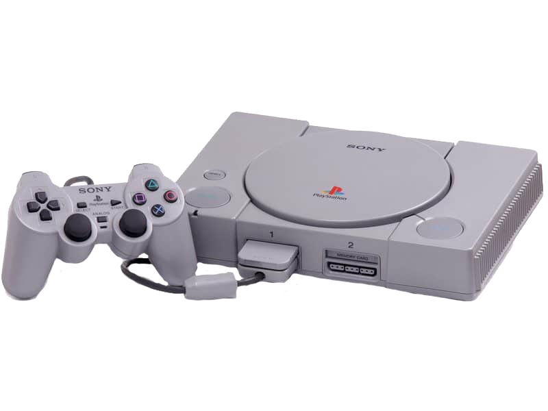

PlayStation
R$300
O PlayStation introduziu a Sony para a indústria de jogos eletrônicos. O uso de CDs para o
armazenamento dos jogos no console foi uma transição dos cartuchos utilizado por outras empresas de
jogos. Desde o seu lançamento até 2006, quando sua produção de jogos foi interrompida, o PlayStation
vendeu mais de 100 milhões de unidades.[4][5] Ocupa a posição de sexto console mais vendido no mundo,
com mais de cem milhões de unidades vendidas. Foi sucedido pelo PlayStation 2, que teve mais de 150
milhões de unidades comercializadas.